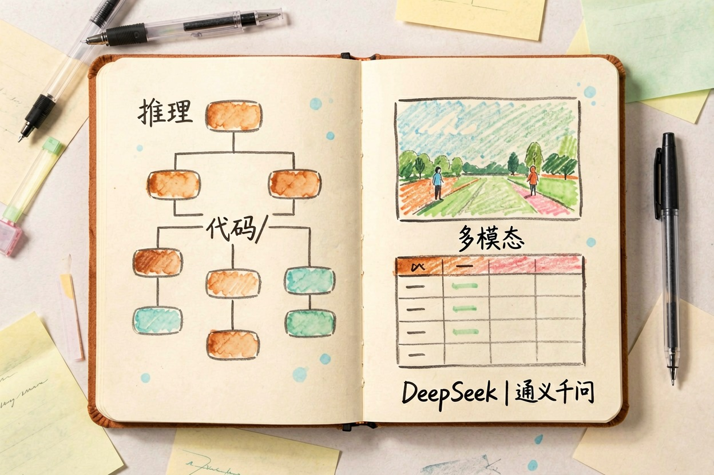
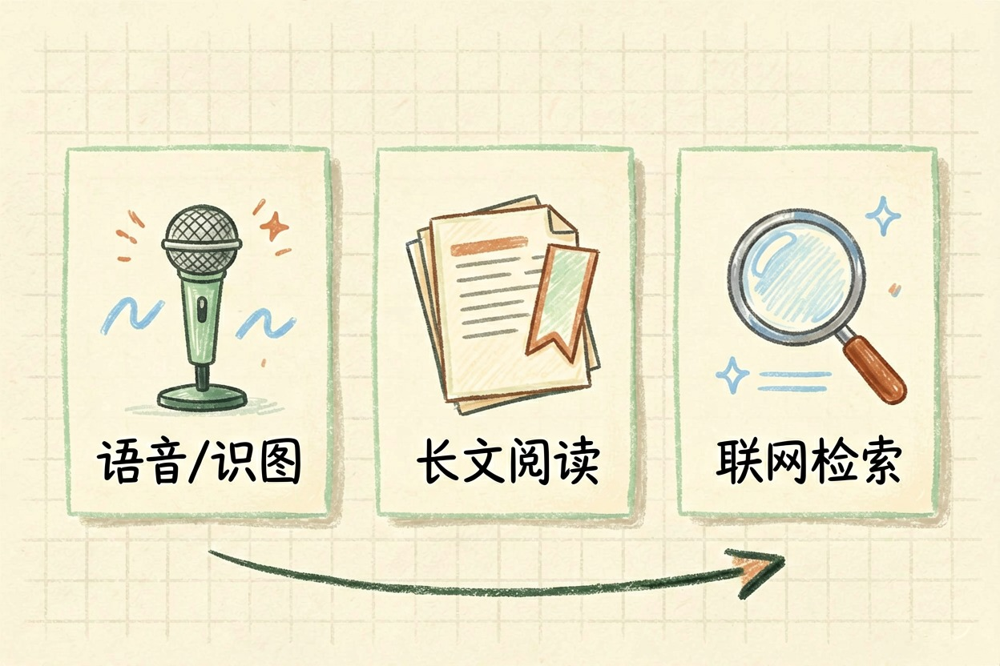
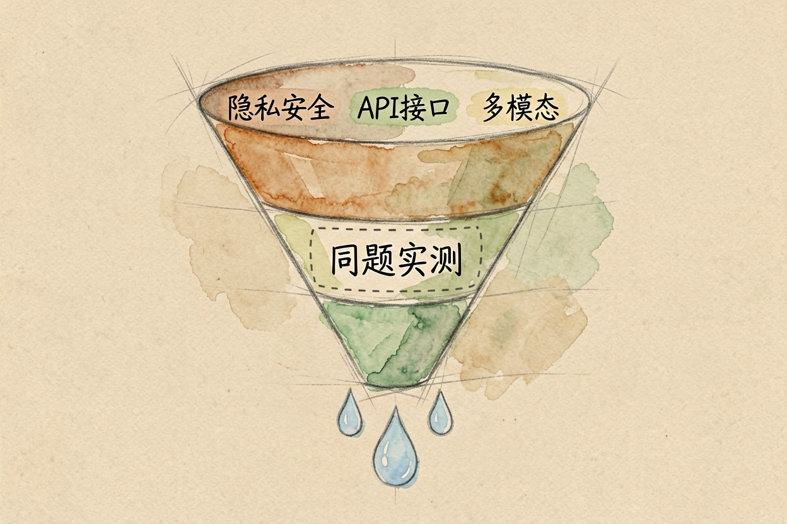

ChatGPT 国内替代品：6 款能直接用的中文 AI
只收录打开就能用的，需要额外网络条件才能访问的产品一律不列，每款都标清免费边界。
结论：6 款 ChatGPT 国内替代品，打开就能用

挑 ChatGPT 国内替代品，标准只有一条：不用额外网络条件，注册完直接能用。下面 6 款都过了这一关，覆盖写作、长文档、搜索三类主要用途，也都有能长期用的免费档。
| 工具 | 最擅长 | 免费情况 |
|---|---|---|
| DeepSeek{:target="_blank"} | 中文写作、推理、代码 | 日常对话免费 |
| 通义千问{:target="_blank"} | 综合任务、文档与图片理解 | 有免费额度 |
| 豆包 | 语音对话、拍照识图、短文案 | 常规使用免费 |
| Kimi | 长文档阅读与摘要 | 常规使用免费 |
| 智谱清言 | 联网查资料、资料整理 | 有免费额度 |
| 文心一言 | 中文知识问答与创作 | 有免费额度 |
各家额度随时调整，以官网当前说明为准。
综合最接近 ChatGPT 的两款：DeepSeek 与通义千问

想要一个「什么都能问」的主力，这两款最接近。DeepSeek 中文表达自然，推理和写代码都不弱，还会把思考过程摊开给你看，好判断结论可不可信。日常对话免费。
通义千问胜在能力面宽：读文档、看图片、处理表格、生成图像都能接，网页端和 App 都有免费额度，和阿里系办公工具衔接顺畅。如果只打算装一个，从这两个里挑不会错。
日常轻量使用：豆包、Kimi

豆包更像随身助手。手机上按住就能语音提问，也能拍照识图，写短文案时语气更活，常规使用免费。通勤路上随口问一句，用它最合适。
Kimi 的招牌是读长东西。几十页的 PDF、合同、论文丢进去，它能通读后回答跨章节的问题，还会指出信息在原文的位置。学生和天天处理资料的上班族值得单独装一个。
搜索型和写作型补位：智谱清言、文心一言
智谱清言支持联网查资料，先看你手头的版本能不能附网页来源——能点开核对的比纯凭记忆作答可靠得多。它有免费额度。
文心一言在中文知识问答、公文和文学创作上比较稳，接入百度生态，查中文语境里的事情顺手，同样有免费额度。这两款更适合当补位，而不是唯一主力。
选之前要想清楚的三件事
先看数据敏感度。合同、身份证号、公司内部经营数据，无论哪一款在线服务都不要直接粘进去。
再看要不要 API，也就是能不能接进你自己的程序或表格。只是网页聊天，随便挑；要做自动化，先查它有没有开放接口和调用价格。
最后看要不要处理图片、语音和文件。只写文字，DeepSeek 足够；经常传图传文件，选通义千问或豆包。
不确定挑哪个，用同一道真实任务去考它们，比看任何评测都准：
下面这段材料，请你完成三件事：
1. 用 3 条要点总结核心内容；
2. 指出其中你无法确认真实性的信息；
3. 用 200 字改写成给外行看的版本。
材料：（粘贴你手头真实的一段工作内容）最后说一句反的：如果你的需求本身就依赖 ChatGPT 独有的生态，比如特定插件、自定义助手、成熟的英文创作链路，那就别硬替。ChatGPT 国内替代品解决的是「打开就能用」，不是逐项对等复刻。
本文信息核对于 2026-08-04。AI 产品的价格、免费额度与功能变动频繁，实际以各工具官网当前说明为准。